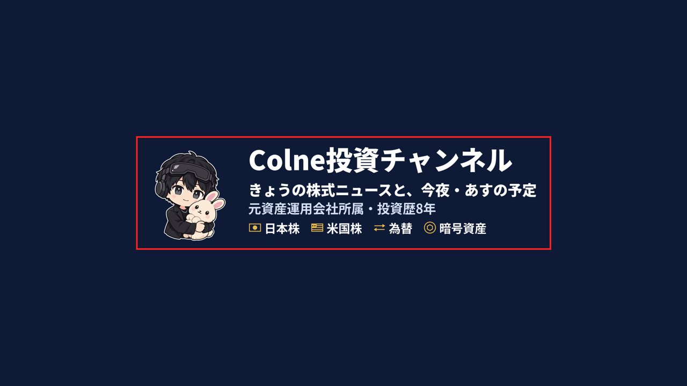

| 見られる内容の1行「きょうの株式ニュースと、今夜・あすの予定」を題の下に | GPT の指摘（見る理由が無い）。「市場」は台本の決まりで使わない |
| 「平日毎日」と時刻は入れない | 石関さん 21:11・22:41 |
| 色は紺・白・金。金は分野のマークだけ | GPT の指摘＋色の数を抑える（Dラボの知見） |
| 米国株のマークを星と横縞の旗に | GPT の指摘（星だけでは分かりにくい） |
| 立ち絵を全身（こはるんを抱いた絵）にし、下に30pxの余白 | GPT の指摘（下の端にくっついていた） |
| 字と地の明るさの差を作る段階で点検（4.5未満なら止まる） | GPT の指摘。白 17.2・経歴 13.0・金 9.3 |
| スマホ（幅390）での字の大きさ | 題 約25px・見られる内容 約14px・経歴 約12px・分野 約11px |

見える範囲（赤枠）

スマホでの見え方